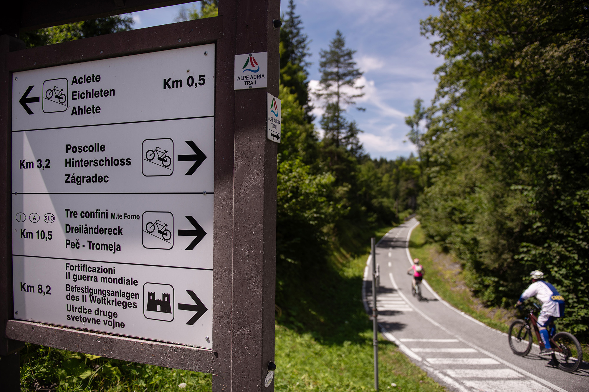
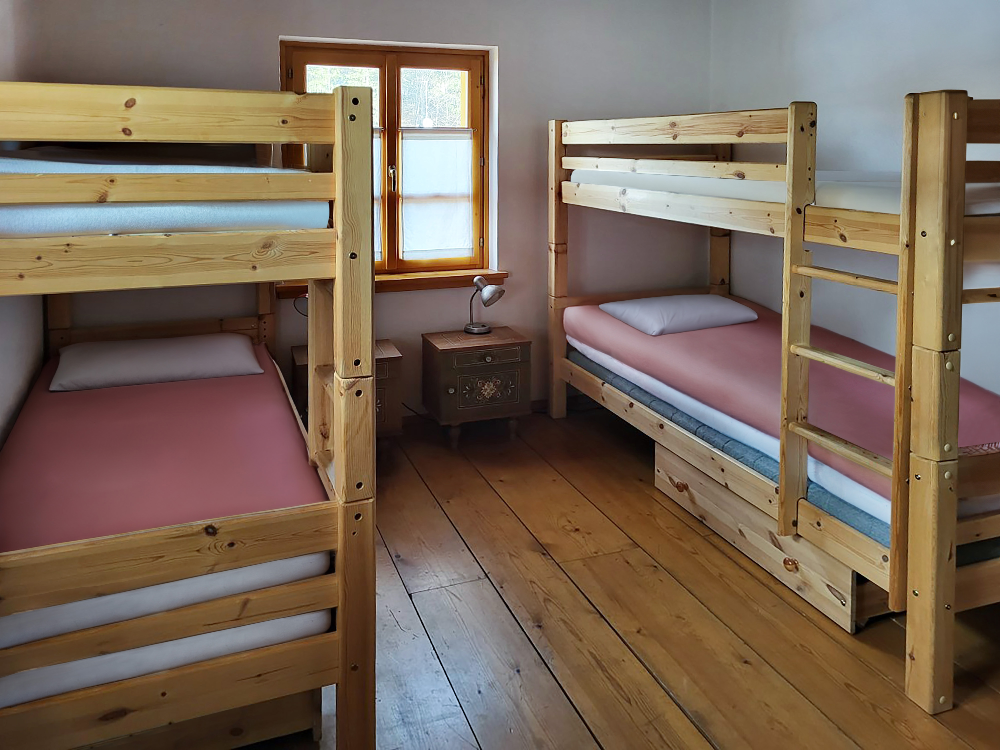

IL SOGGIORNO



🏠
Un posto tranquillo, facile da raggiungere anche in bicicletta e semplice da abitare
🛏️
Fino a 10 posti letto
🌳
Giardino e orto
👥
Spazi condivisi
🚴
Autonomia nella gestione della giornata